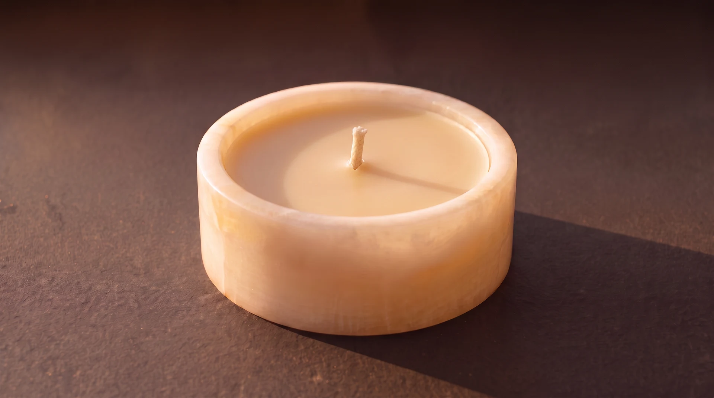

Avant d'être une flamme, c'était un été entier. Les abeilles ont changé la lumière en nectar, le nectar en miel, puis ont scellé chaque alvéole d'un couvercle de cire : l'opercule. Nous avons simplement attendu le soir.
Note de cirier — une alvéole d'ouvrière mesure environ 5,3 mm.
Descendre — la cire attend.
II · 35 °C — La pierre
Une pierre quilaisse passerle jour.
La vasque est taillée dans un seul bloc d'albâtre, puis polie à la main jusqu'à six millimètres d'épaisseur. Au soleil, elle s'éclaire sur la tranche. Retenez-la : ce soir, c'est elle qui s'allumera.
Note de cirier — vers 35 °C, la température d'une ruche, la cire s'assouplit sans couler.
III · 64 °C — Point de fusion
Rien ne presse.Tout fond.
Les alvéoles s'affaissent une à une et disparaissent dans leur propre or. Nous fondons la cire au bain-marie, jamais au-dessus de 80 °C, puis la filtrons trois fois sur un lin serré : elle ne garde que sa couleur, celle du miel qu'elle protégeait.
Note de cirier — la cire d'abeille fond entre 62 et 64 °C.
IV · 72 °C — Immersion
À l'intérieur,tout est or.
C'est ici, tant que tout est liquide, que nous infusons nos absolus : propolis, ciste, foin coupé, fleur de tilleul. Quarante-huit heures, le temps qu'ils ne fassent plus qu'un avec la cire.
Note de cirier — pour un kilo de cire, une colonie consomme six à huit kilos de miel.
V · 60 °C — La prise
Ce qui coulaitse tient.
En refroidissant, la cire se trouble, pâlit, se fige. Trois jours de repos à l'abri du jour, dans la vasque même où elle brûlera.
VI · ≈ 1 000 °C — Le soir
Rendre au soirce que l'étéa donné.
Une mèche de coton pur, soixante heures de lumière. À la première flamme, l'albâtre s'allume de l'intérieur, comme une lanterne de miel.
Approchez la main de la flamme. Soufflez, si vous osez.
N°01
Opercule N°01
« Soleil scellé »
Cire d'abeille pure. Absolus de propolis, ciste, foin coupé, fleur de tilleul. Vasque d'albâtre taillée main.
Survolez une alvéole pour la remplir, touchez-la pour l'operculer et lire ce qu'elle contient.
Pourquoi l'hexagone ? C'est la forme qui partage un plan en cellules égales avec le moins de paroi possible. Conjecture du nid d'abeille, démontrée par Thomas Hales en 1999.
Ce que pèse une bougie
Un été, en quatre chiffres.
Cire d'abeille
0g
Miel consommé par la colonie
≈ 0kg
Point de fusion
0–0°C
Combustion
≈ 0h
soit 30 soirées de lumière.

L'albâtre
Une pierre assez fine pour que la flamme la traverse.
Chaque vasque est taillée et polie à la main dans un bloc d'albâtre de Volterra : un cylindre de 14 × 5,5 cm aux parois de 6 mm. Le jour, elle a la douceur d'un savon. Le soir, elle devient lanterne.
Provenance fictive — maison de concept.
Le rituel
Quatre gestes, pour soixante heures.
i.
Première combustion de deux à trois heures, jusqu'à ce que la cire fonde jusqu'aux bords.
ii.
Recouper la mèche à 5 mm avant chaque allumage.
iii.
Jamais plus de quatre heures d'affilée.
iv.
Éteindre en couchant la mèche dans la cire. Ne soufflez pas — sauf plus haut, sur cette page.
La recharge
Rapportez la vasque vide, nous la recoulons.
La pierre est faite pour durer une vie. La cire, pour être rendue au soir, encore et encore.